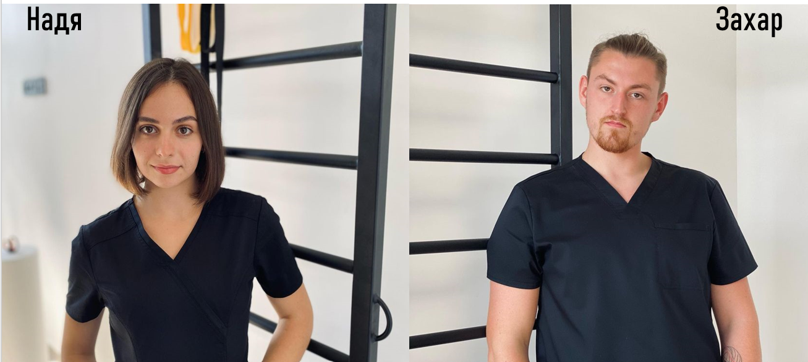

Команда

Усім привіт! вітаємо на офіційній сторінці Rekham!
Нас звати Захар і Надя - ми є засновниками центру фізичної терапії.
За освітою ми фізичні терапевти, як і усі члени нашої команди.
В Rekham ми працюємо над відновленням опорно рухового апарату, тобто
допомагаємо людям відновлюватися після різноманітних травм чи операцій,
на кістках, суглобах чи зв'язках.
Також ми допомагаємо людям у вирішенні таких проблем як гострий біль чи
хронічний біль у попереку, шиї чи суглобах.
Якщо у вас є певні порушення опорно- рухового апарату,
запрошуємо вас в Rekham, а ми гарантуємо вам сучасний та
індивідуальний підхід і комфортну робочу атмосферу!)
Місія
Спрогнозувати скільки сил, часу та коштів вам потрібно буде
витратити на відновлення. Створити вам індивідуальний план
відновлення з чіткими цілями. З вами буде узгоджено всі ціли і ви
ВИБЕРЕТЕ пріорітетні для ВАС. Для комфорту пацієнта/клієнта ми
будемо якомога ближче до вас щоб не довелось трати час і сили на
добирання до нашого центру, настільки близько що аж в дома. Так
це ще одна наша задача надати пацієнту можливість отримати
послугу в себе вдома якщо це необхідно.
Ми працюємо на базі сучасних доказових методів.
Надаємо пацієнту/клієнту комплексний підхід. (тренер, лікар,
психолог та ін.)
Забезпечення пацієнту комфортного перебування і найкращого
досвіду від співпраці з нами. Без зайвих витрат часу, сил та коштів.
Візія
Надати доступ до нашого центру в всіх районах Львова, а дальше і області, країни.